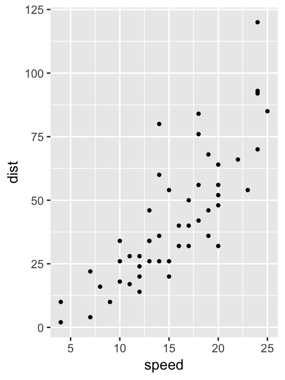

Last updated: 2019-01-09
This reproducible R Markdown analysis was created with workflowr (version 1.1.1.9001). The Report tab describes the reproducibility checks that were applied when the results were created. The Past versions tab lists the development history.
Great! Since the R Markdown file has been committed to the Git repository, you know the exact version of the code that produced these results.
Great job! The global environment was empty. Objects defined in the global environment can affect the analysis in your R Markdown file in unknown ways. For reproduciblity it’s best to always run the code in an empty environment.
The command set.seed(1) was run prior to running the code in the R Markdown file. Setting a seed ensures that any results that rely on randomness, e.g. subsampling or permutations, are reproducible.
Great job! Recording the operating system, R version, and package versions is critical for reproducibility.
wflow_publish or wflow_git_commit). workflowr only checks the R Markdown file, but you know if there are other scripts or data files that it depends on. Below is the status of the Git repository when the results were generated:
Ignored files:
Ignored: .DS_Store
Ignored: analysis/.DS_Store
Ignored: data/Divvy_Stations_2016_Q1Q2.csv
Ignored: data/Divvy_Stations_2016_Q3.csv
Ignored: data/Divvy_Stations_2016_Q4.csv
Ignored: data/Divvy_Trips_2016_04.csv
Ignored: data/Divvy_Trips_2016_05.csv
Ignored: data/Divvy_Trips_2016_06.csv
Ignored: data/Divvy_Trips_2016_Q1.csv
Ignored: data/Divvy_Trips_2016_Q3.csv
Ignored: data/Divvy_Trips_2016_Q4.csv
Ignored: data/README.txt
Ignored: data/data.tar.gz
Ignored: docs/.DS_Store
Note that any generated files, e.g. HTML, png, CSS, etc., are not included in this status report because it is ok for generated content to have uncommitted changes.
These are the previous versions of the R Markdown and HTML files. If you’ve configured a remote Git repository (see ?wflow_git_remote), click on the hyperlinks in the table below to view them.
| File | Version | Author | Date | Message |
|---|---|---|---|---|
| html | 31416fa | Peter Carbonetto | 2018-05-22 | Reverted small change to setup.Rmd. |
| Rmd | 3888903 | Peter Carbonetto | 2018-05-22 | wflow_publish(“setup.Rmd”) |
| Rmd | 85d562e | Peter Carbonetto | 2018-05-22 | wflow_publish(“setup.Rmd”) |
| html | df8858b | Peter Carbonetto | 2018-05-07 | Re-built index and setup pages to test; fixed some indenting in _site.yml. |
| html | 9bcbf62 | Peter Carbonetto | 2018-04-14 | Added plotting test to setup.Rmd. |
| Rmd | f4f5c96 | Peter Carbonetto | 2018-04-14 | wflow_publish(“setup.Rmd”) |
| html | 7c0675a | Peter Carbonetto | 2018-04-14 | Re-built setup.html with workflowr v0.11.0.9000. |
| Rmd | 57f2519 | Peter Carbonetto | 2018-04-14 | wflow_publish(“setup.Rmd”) |
| html | 51163d7 | Peter Carbonetto | 2018-03-12 | Ran wflow_publish(“*.Rmd“) with version v0.11.0 of workflowr. |
| html | 599efc1 | Peter Carbonetto | 2018-03-09 | Ran wflow_publish(c(“index.Rmd”,“setup.Rmd”,“license.Rmd”)). |
| Rmd | 891978b | Peter Carbonetto | 2018-03-09 | wflow_publish(c(“index.Rmd”, “setup.Rmd”, “license.Rmd”)) |
| html | 7405938 | Peter Carbonetto | 2018-03-09 | Ran wflow_publish(“setup.Rmd”). |
| Rmd | 2d5dfd7 | Peter Carbonetto | 2018-02-27 | wflow_publish(“setup.Rmd”) |
| Rmd | 9503f31 | Peter Carbonetto | 2018-01-24 | Added symbolic links into organized subdirectory. |
| html | b32e833 | Peter Carbonetto | 2018-01-18 | Re-built all webpages using workflowr v0.1.0. |
| html | 0401587 | Peter Carbonetto | 2017-11-16 | Updated license.html, setup.html, station-map.html and |
| Rmd | 9463eb6 | Peter Carbonetto | 2017-11-16 | wflow_publish(c(“setup.Rmd”, “license.Rmd”, “time-of-day-trends.Rmd”, |
| html | 96f78da | Peter Carbonetto | 2017-08-02 | Test commit. |
| html | 580515e | Peter Carbonetto | 2017-08-02 | Build site. |
| html | 07020c0 | Peter Carbonetto | 2017-08-02 | Build site. |
| Rmd | 34dc443 | Peter Carbonetto | 2017-08-02 | wflow_publish(“setup.Rmd”) |
| html | c67eb62 | Peter Carbonetto | 2017-08-02 | Testing wflow_publish(). |
| Rmd | f7b7aec | Peter Carbonetto | 2017-08-02 | wflow_publish(“setup.Rmd”) |
| Rmd | c6e8686 | Peter Carbonetto | 2017-07-31 | wflow_publish(Sys.glob(“*.Rmd“)) |
| Rmd | bebaa7f | Peter Carbonetto | 2017-07-31 | wflow_publish(“setup.Rmd”) |
| html | 45c4f1f | Peter Carbonetto | 2017-07-24 | Build site. |
| Rmd | eee0e32 | Peter Carbonetto | 2017-07-24 | Fixed links after transfering to stephenslab/wflow-divvy. |
| html | 727b8d9 | Peter Carbonetto | 2017-07-13 | Re-built all the analysis files; wflow_publish(Sys.glob(“*.Rmd“)). |
| Rmd | 6d02ffc | Peter Carbonetto | 2017-07-13 | Made a dozen or so small adjustments to the .Rmd files. |
| html | 2815349 | Peter Carbonetto | 2017-07-07 | Added section to Setup page. |
| Rmd | 730799c | Peter Carbonetto | 2017-07-07 | wflow_publish(“analysis/setup.Rmd”) |
| html | bf818d8 | Peter Carbonetto | 2017-07-07 | Ran wflow_publish(c(“index.Rmd”, “setup.Rmd”, “station-map.Rmd”, |
| Rmd | e4ba033 | Peter Carbonetto | 2017-07-07 | Removed use of word ‘notebook’. |
| html | 2c2aba5 | Peter Carbonetto | 2017-07-07 | A few more formatting adjustments to setup.Rmd. |
| Rmd | cb681f5 | Peter Carbonetto | 2017-07-07 | wflow_publish(“setup.Rmd”) |
| html | 23ca9fd | Peter Carbonetto | 2017-07-07 | A few formatting adjustments to setup.Rmd. |
| Rmd | 75d6e3f | Peter Carbonetto | 2017-07-07 | wflow_publish(“setup.Rmd”) |
| html | c692324 | Peter Carbonetto | 2017-07-07 | Filled out setup.Rmd. |
| Rmd | 9077b6c | Peter Carbonetto | 2017-07-07 | wflow_publish(“setup.Rmd”) |
| html | 82473df | Peter Carbonetto | 2017-06-29 | Build site. |
| Rmd | e4e8996 | Peter Carbonetto | 2017-06-29 | Wrote first draft of function read.divvy.data to read in the Divvy data. |
| html | 5fcd514 | Peter Carbonetto | 2017-06-29 | Build site. |
| Rmd | e803dcd | Peter Carbonetto | 2017-06-29 | wflow_publish(list.files(pattern = “*.Rmd“)) |
| html | 8b33acc | Peter Carbonetto | 2017-06-29 | Re-built site with addition of setup and “first look” notebooks. |
| Rmd | 538951e | Peter Carbonetto | 2017-06-29 | wflow_publish(list.files(pattern = “*.Rmd“)) |
To reproduce the results on your own computer, please follow these setup instructions.
Download or clone the git repository on your computer.
Download the Divvy data files and copy the files to the “data” directory. I have provided a script code/retrieve_divvy_data.sh that will automatically retrieve the data files and move them to the expected location. Alternatively, you can view this script and follow the steps by hand. After completing this step, these files should be in the data directory:
Divvy_Stations_2016_Q1Q2.csv
Divvy_Stations_2016_Q3.csv
Divvy_Stations_2016_Q4.csv
Divvy_Trips_2016_04.csv
Divvy_Trips_2016_05.csv
Divvy_Trips_2016_06.csv
Divvy_Trips_2016_Q1.csv
Divvy_Trips_2016_Q3.csv
Divvy_Trips_2016_Q4.csvInstall the R packages used for the analyses:
install.packages(c("data.table","ggplot2"))Once you have completed these steps, you may run the R code. When running the code, make sure your working directory is set to the “analysis” directory, e.g.,
getwd()
# [1] "/Users/pcarbo/git/wflow-divvy/analysis"library(ggplot2)
# Warning: package 'ggplot2' was built under R version 3.4.4
ggplot(cars,aes(x = speed,y = dist)) +
geom_point(shape = 20)
| Version | Author | Date |
|---|---|---|
| 9bcbf62 | Peter Carbonetto | 2018-04-14 |
sessionInfo()
# R version 3.4.3 (2017-11-30)
# Platform: x86_64-apple-darwin15.6.0 (64-bit)
# Running under: macOS High Sierra 10.13.6
#
# Matrix products: default
# BLAS: /Library/Frameworks/R.framework/Versions/3.4/Resources/lib/libRblas.0.dylib
# LAPACK: /Library/Frameworks/R.framework/Versions/3.4/Resources/lib/libRlapack.dylib
#
# locale:
# [1] en_US.UTF-8/en_US.UTF-8/en_US.UTF-8/C/en_US.UTF-8/en_US.UTF-8
#
# attached base packages:
# [1] stats graphics grDevices utils datasets methods base
#
# other attached packages:
# [1] ggplot2_3.1.0
#
# loaded via a namespace (and not attached):
# [1] Rcpp_1.0.0 bindr_0.1.1 knitr_1.20
# [4] whisker_0.3-2 magrittr_1.5 workflowr_1.1.1.9001
# [7] tidyselect_0.2.4 munsell_0.4.3 colorspace_1.4-0
# [10] R6_2.2.2 rlang_0.2.2 dplyr_0.7.6
# [13] stringr_1.3.1 plyr_1.8.4 tools_3.4.3
# [16] grid_3.4.3 gtable_0.2.0 withr_2.1.2
# [19] git2r_0.23.3 htmltools_0.3.6 assertthat_0.2.0
# [22] yaml_2.2.0 lazyeval_0.2.1 rprojroot_1.3-2
# [25] digest_0.6.17 tibble_1.4.2 bindrcpp_0.2.2
# [28] purrr_0.2.5 fs_1.2.6 glue_1.3.0
# [31] evaluate_0.11 rmarkdown_1.10 labeling_0.3
# [34] stringi_1.2.4 pillar_1.2.1 compiler_3.4.3
# [37] scales_0.5.0 backports_1.1.2 pkgconfig_2.0.2